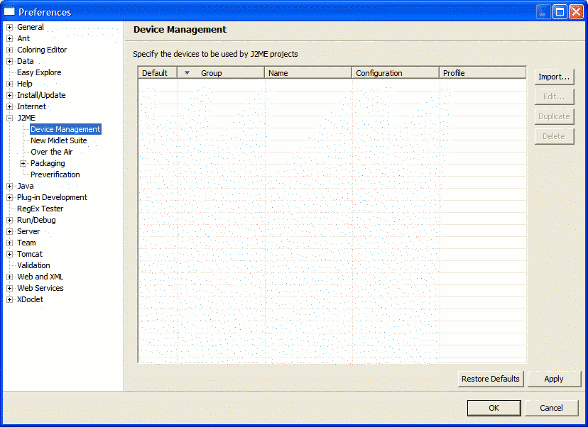
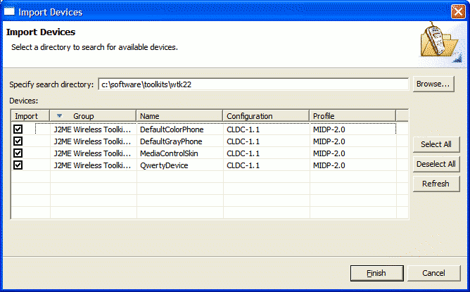
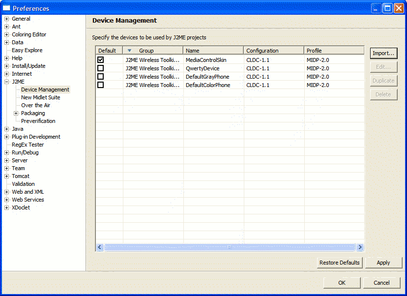
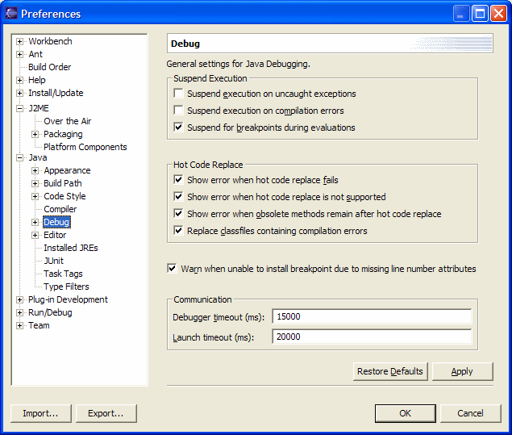
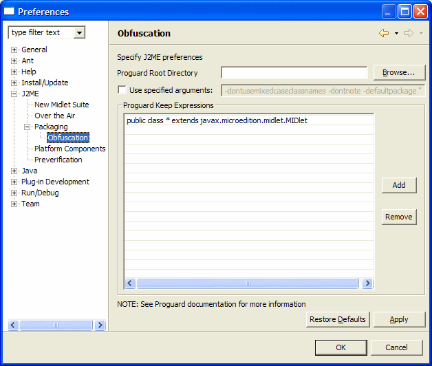
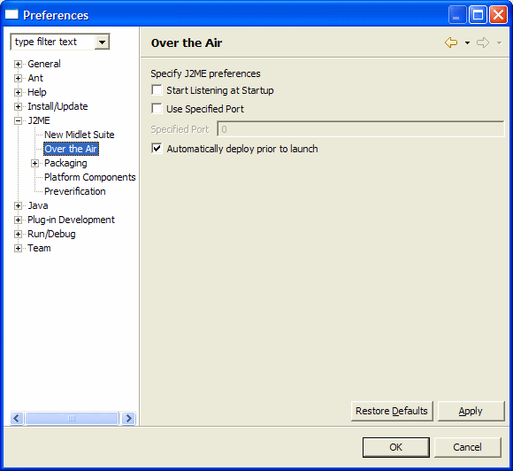

|
J2ME Development using Eclipse
"From zero to mobile in minutes" |
Configuring EclipseME and Eclipse
This document provides instructions on how to configure EclipseME and Eclipse for J2ME development.
- Import the Device Definitions
- Change Eclipse's Debug Settings
- Configure ProGuard (Optional)
- Configure OTA options (Optional)
1. Import the Device Definitions
In order to use EclipseME, you must configure at least one Device Definition. In order to do this, perform the following steps:
-
Select the Preferences menu item from Eclipse's Window menu.
-
Expand the J2ME item in the pane to the left and click on Device Management.
 -
Select Import...
-
In the resulting dialog, select the root directory to be searched to find known devices definitions.
As you leave the search directory text field or select the Refresh button, EclipseME will begin looking for devices in the specified directory and all subdirectories. As of version 1.5.0 of EclipseME, it is no longer necessary to pick the "perfect" directory in order to have devices imported, as EclipseME should be able to locate them if they reside anywhere within the specified directory. EclipseME will display the devices that are found as they are found. If you wish to stop the search at any time, select the Cancel button.
After the search has completed, use the checkboxes to select the device definitions to be imported. Only devices that have been imported into your configuration may be used by project definitions and for launching. Finally, choose Finish to complete the import process.
If EclipseME fails to locate a device definition that you expected would be found, it may be that EclipseME does not support it for the time being. In this case, please feel free to submit an RFE to ask for support for this WTK to be added. See here for how to do this.
-
When you have successfully completed adding the device, you should see the imported devices in the device management preferences.
Save the definitions by selecting Finish.
2. Change Eclipse's Debug Settings
Because of some quirks in the wireless toolkits, Sun's in particular, if you are going to debug your MIDlet using Eclipse, you must change several of the default debug settings. To do this:
-
Select the Preferences menu item from Eclipse's Window menu.
-
Expand the Java item in the left pane and click on the Debug entry.
-
Ensure that both Suspend execution on uncaught exceptions and Suspend execution on compilation errors near the top of the dialog are NOT checked.
-
Increase the Debugger timeout near the bottom of the dialog to at least 15000 ms.
-
The resulting settings should look something like this:

If you do not make these changes you will get errors when you try to run your MIDlet.
3. Configure ProGuard (Optional)
If you will be using ProGuard to produce obfuscated packages, you will need to configure it into the plug-in. To do this:
-
Select the Preferences menu item from Eclipse's Window menu.
-
Expand the J2ME and the Packaging items in the left pane and click on the Obfuscation entry.
-
Configure the ProGuard Root Directory near the top of the dialog.
-
Configure any other ProGuard-specific settings that you need. For more information on ProGuard, see the ProGuard SourceForge site.
Important note for Microsoft Windows Users: By default, ProGuard assumes that you are using an operating system that can distinguish between two file names that differ only in their case (i.e. A.java and a.java are two different files. This is clearly not the case in Microsoft Windows. Windows users should be sure to specify the -dontusemixedcaseclassnames option to ProGuard. If you fail to do this, and if you have more than 26 classes in your project, ProGuard's default use of case-sensitive file names will cause classes to overwrite one another. For safety, beginning with release 0.9.0 of EclipseME, the -dontusemixedcaseclassnames option is included as one of the default arguments to ProGuard. UNIX users with projects with many classes may be able to achieve a small reduction in the final size of their JAR file by removing this option.
-
The resulting settings should look something like this:

4. Configure EclipseME's Over The Air (OTA) options (Optional)
If you will be using EclipseME to debug your MIDlet in Over The Air (OTA) mode, you may want to adjust the OTA Preferences. To do this:
-
Select the Preferences menu item from Eclipse's Window menu.
-
Expand the J2ME item in the left pane and click on the Over The Air entry.
-
The default settings look like this:

At this point, you are ready to use EclipseME to create MIDlet suites. Before you do so, however, we strongly recommend that you read the section on Best Practices.